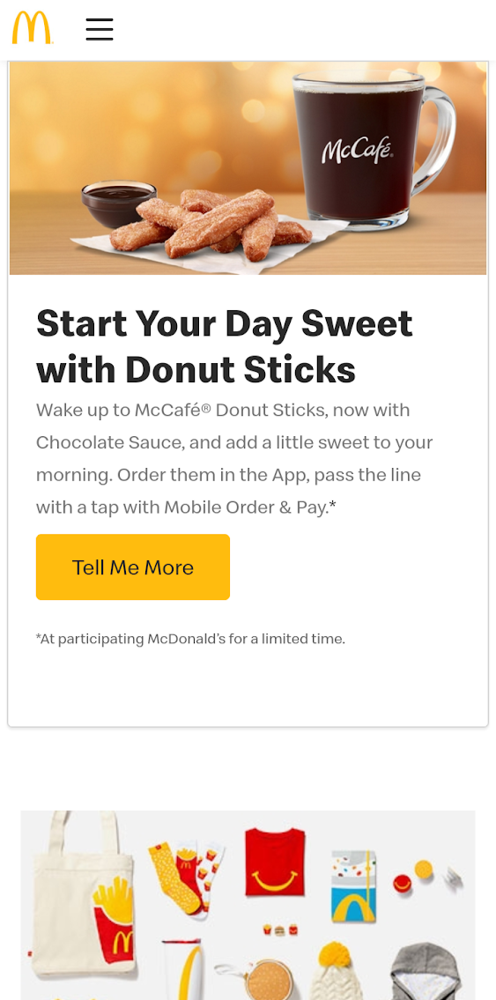

White Space
Google's website puts most of the content near the search bar and opens up a lot of white space beneath it. It looks very clean, and easy to use.
Visual Hierarchy
McDonald's
mcdonalds.com McDonald's does a good job at directing you to what they want you to see. The image of the food is large and stands out, and the heading and "Tell Me More" buttons stand out more than the paragraph.
Repetition
NASA
nasa.govNasa's website has lot's of articles all with different images and information but each of them has a repeated style of title, and on the mobile view they are all the same size. The repetition helps support the idea that they are all part of the same category.